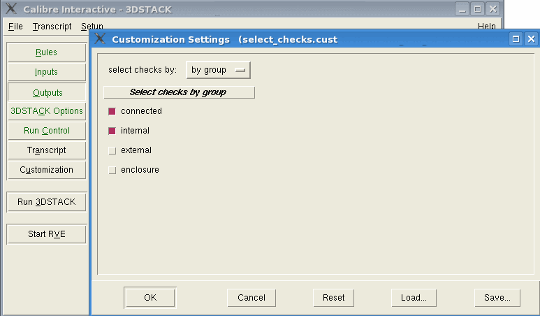

Use Calibre Interactive
to write a Calibre Interactive Customization settings file.
See “Customization Files” in the for more details.
Procedure
- Open Calibre Interactive for
Calibre 3DSTACK and load a rule file.
- Create a new text file called select_checks.tcl in
your working directory and insert the following text:
set _customM_0 [CUSTOM::VARIABLE -name "select_by" -choices \
{{"All checks" 0} {"by group" 1} } -initval {1} -select 1 -boolean 0 \
-prompt "select checks by:" -display 1 -tool 3DSTACK ]
CUSTOM::LABEL -prompt "Select checks by group " -tool 3DSTACK \
-master [list $_customM_0 1]
CUSTOM::CHECK -name "connected" -choices {connected} -initval {connected}\
-select 1 -boolean 1 -prompt "connected" -display 1 -tool 3DSTACK \
-master [list $_customM_0 1]
CUSTOM::CHECK -name "internal" -choices {internal} -initval {internal} \
-select 1 -boolean 1 -prompt "internal" -display 1 -tool 3DSTACK \
-master [list $_customM_0 1]
CUSTOM::CHECK -name "external" -choices {external} -initval {external} \
-select 0 -boolean 1 -prompt "external" -display 1 -tool 3DSTACK \
-master [list $_customM_0 1]
CUSTOM::CHECK -name "enclosure" -choices {enclosure} -initval {enclosure}\
-select 0 -boolean 1 -prompt "enclosure" -display 1 -tool 3DSTACK \
-master [list $_customM_0 1]
Save the file and close it.
- In Calibre Interactive, select and
enable the “Customization File” checkbox.
- In the
file field, browse to the path where you saved the select_checks.tcl file
and click OK.
A new Customization button
appears under the Transcript button on the
left panel of Calibre Interactive.
- Click on the Customization button.
The select_checks.tcl file,
shown in Step 2, enables modification
of the select checks command.
Figure 1. Customization Settings
in Calibre Interactive
- Choose
the checks to include in the verification run and click OK to
close the dialog box.
- Choose to verify that
the checks have been selected as intended.
Results
A Calibre Interactive customization
file has been created and used to modify the select checks command.
This particular example is useful for saving select check options
after Calibre Interactive is closed.
In this case, if you choose the All Checks option,
no commands are added to the control file, and therefore all checks
are run. If you choose the By Group option,
you may choose to select checks by the type of rule check.
Use this example to create your own
customization file for Calibre Interactive.